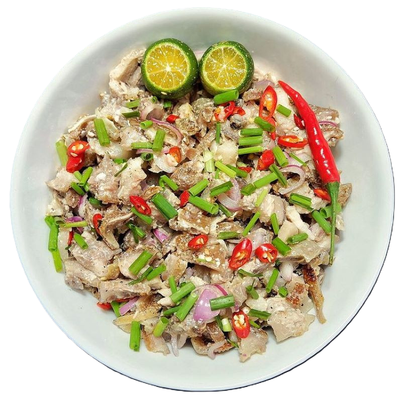
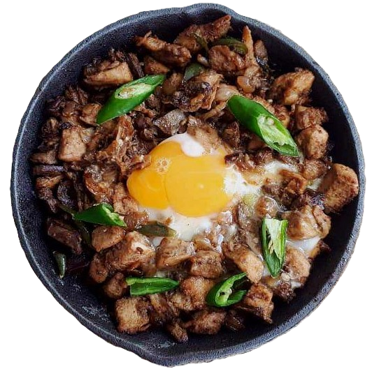

Ingredients:
- 1 kg chicken or pork (or a combination)
- 1/2 cup vinegar
- 1/2 cup soy sauce
- 1 cup water
- 1 whole head of garlic, crushed
- 1 teaspoon whole peppercorns
- 3 pcs bay leaves
- 1 teaspoon sugar (optional)
- Cooking oil
Adobo
Cooking Instructions:
- Saute the garlic in oil until golden brown.
- Add the meat and saute until slightly cooked.
- Pour in soy sauce, vinegar, water, pepper, and bay leaves.
- Simmer for 30-40 minutes or until tender.
- Stir and season to taste. Once the sauce thickens, it's ready to serve.
Sinigang
Cooking Instructions:
- Boil the pork in water with tomatoes and onions for 30-40 minutes or until tender.
- Add the tamarind extract or sinigang mix and stir.
- Add the radish, string beans, and chili peppers. Simmer for 5 minutes.
- Add the water spinach and season with salt and pepper.
- Serve hot.

Ingredients:
- 1 kg chicken or pork (or a combination)
- 1/2 cup vinegar
- 1/2 cup soy sauce
- 1 cup water
- 1 whole head of garlic, crushed
- 1 teaspoon whole peppercorns
- 3 pcs bay leaves
- 1 teaspoon sugar (optional)
- Cooking oil

Ingredients:
- Meat
- Lean cuts of pork
- Sauce Mashed brain / Mayonnaise
- Vegetables
- Onion
- Garlic
- Ginger
- Lemongrass
- Green or red chilies
- Fish sauce
- Black Peppercorn
- Coarse salt
- Vinegar
- Knorr Liquid Seasoning.
Dinakdakan
Cooking Instructions:
- Gently drop the belly slices into a pot with water and boil for 30 to 35 minutes.
- Season with salt and pepper, and let it rest for at least 10 minutes.
- Pour in soy sauce, vinegar, water, pepper, and bay leaves.
- Grill it Simply grill each side for around 6 minutes total.
Lechon
Cooking Instructions:
- Clean and prepare the pig. Stuff the inside with garlic, lemongrass, bay leaves, salt, and pepper.
- Sew the belly closed and skewer the pig onto a long bamboo pole.
- Sew the belly closed and skewer the pig onto a long bamboo pole.
- Once the skin is crispy, carve and serve.
Ingredients:
- 1 whole pig (5-10 kg)
- 1 cup salt
- 1 cup pepper
- 1 cup garlic, crushed
- 5 stalks lemongrass
- 3 pcs bay leaves
- 1 cup soy sauce (for basting)

Ingredients:
- Jowl, ears, or belly of pork
- Liver of chicken
- Juice from calamansi
- Onions
- Chili peppers
- Season with salt and pepper.
Sisig
Cooking Instructions:
- Combine pork belly, face, ears, vinegar, soy sauce in a stock pot. Fill with water until meat is covered. Add bay leaves, salt, and peppercorns. Bring to a boil then simmer for at least an hour or until meat is no longer tight and tough.
- Remove meat from pot and grill for 10 minutes.
- Chop pork belly and face meat into 1/4 - 1/2 inch cubes. Finely chop pig ear pieces.
- Mix chopped pork in a bowl and add Thai chilis, kalamansi juice, vinegar, salt, pepper, and garlic powder (or sisig seasoning packet)
- In a saute pan over medium heat, add 1 T oil and saute shallots for 1-2 minutes. Add chicken livers; mash and saute until cooked through.
- Add chopped pork (with liquids) to saute pan, saute until meat is hot. Add mayonnaise and combine.
Laing
Cooking Instructions:
- Sauté garlic and onion in a little oil.
- Add pork or shrimp and cook until done.
- Pour in the thin coconut milk and bring to a boil. Add the dried taro leaves but do not stir.
- Once it starts to dry up, add the thick coconut milk and chili peppers.
- Simmer until the sauce thickens and season to taste.
Ingredients:
- 2 cups dried taro leaves
- 1 cup thick coconut milk
- 2 cups thin coconut milk
- 1/2 cup shrimp or pork
- 2 pcs chili peppers
- 1 onion, chopped
- 4 cloves garlic, crushed
- Salt and pepper to taste